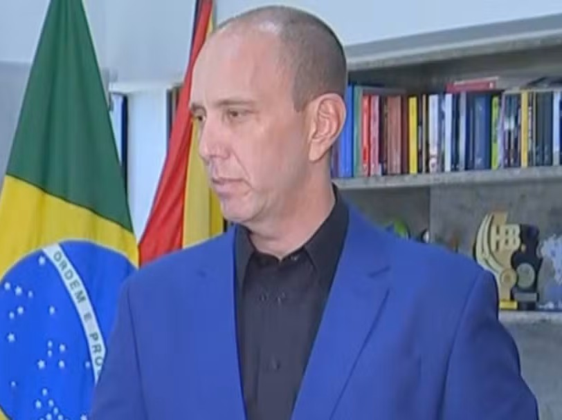

Início
Notícias
Emendas
Midia
‹
›
Fonte: Abril.com
Queimado com operação da PF, Rodrigo Manga ganha seguidores e mantém planos para 2026

Fonte: G1
100 dias de governo: prefeito de Sorocaba garante que famílias sorteadas em programa de casas populares lançado há 4 anos receberão chaves até o fim de 2026
Fonte: R7 São Paulo
Manga se destaca em cenários sem Tarcísio e cresce nas pesquisas para o governo de SP